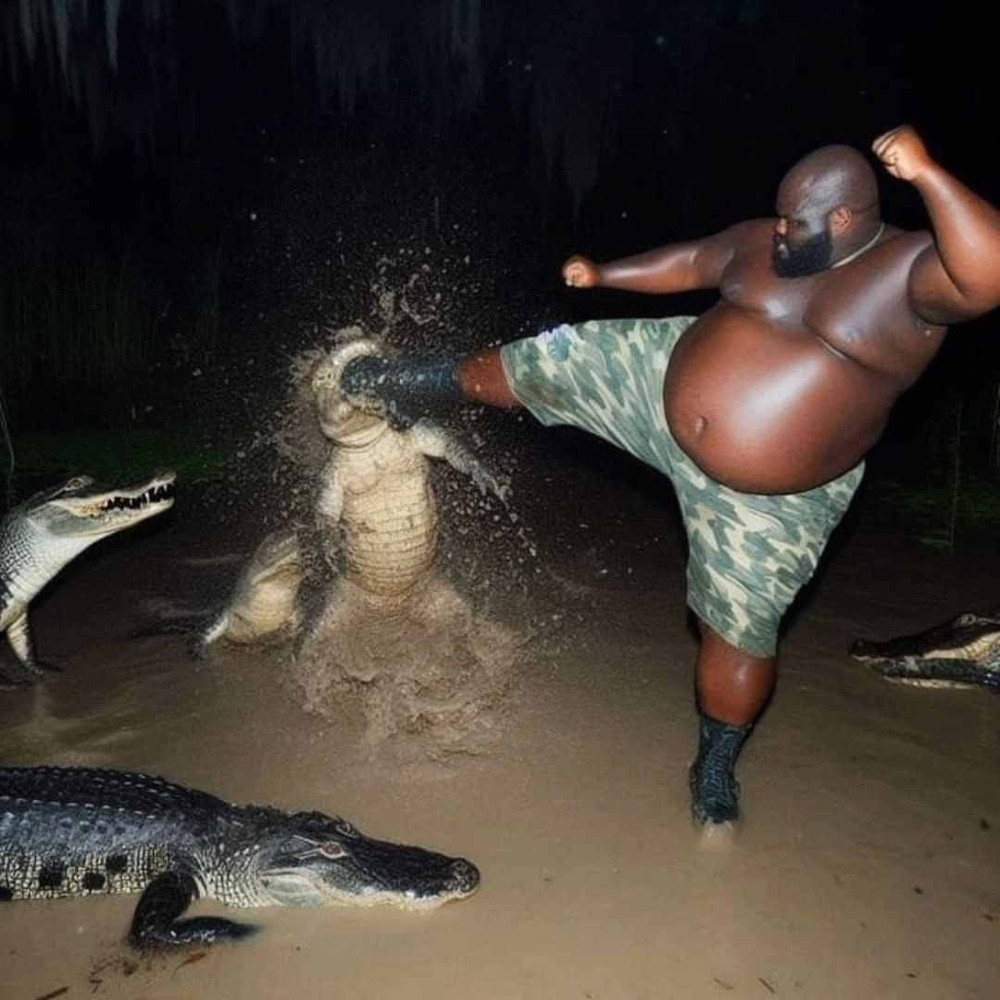
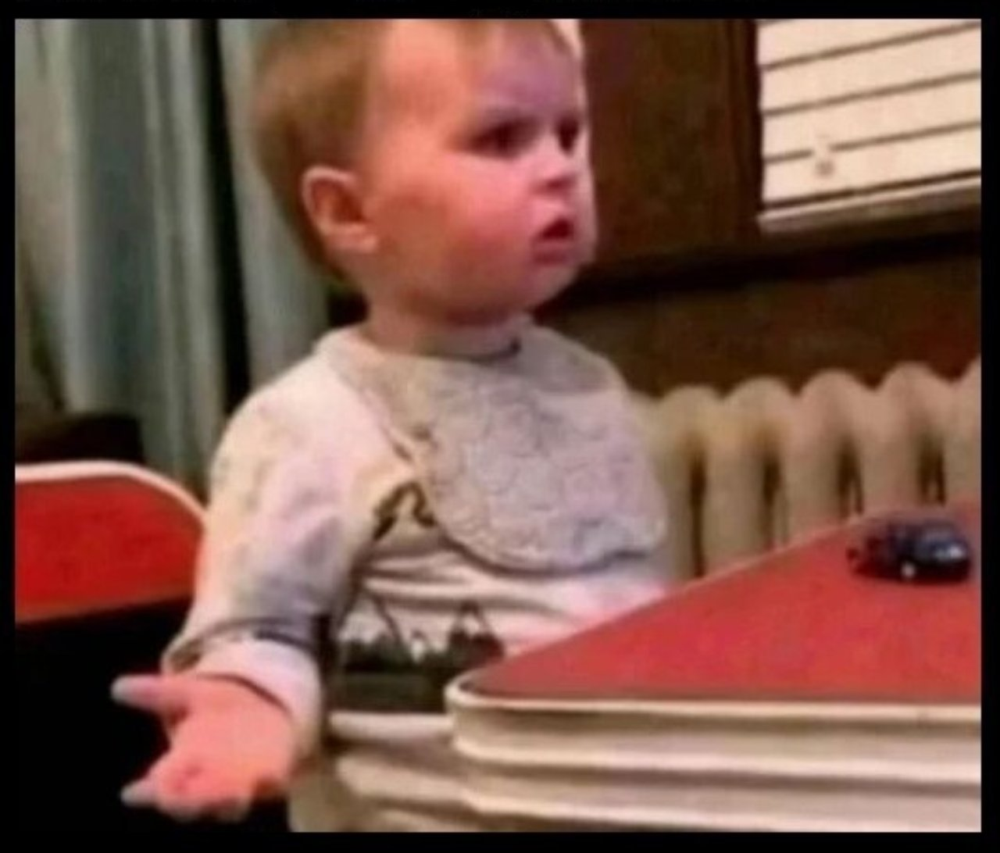

Эквалайзер
Делит пространство
Drum’n’Bass - это музыка, где каждый элемент борется за выживание в миксе.
«Почему мой бас не рычит и не давит? Почему барабаны звучат как шлепок тапком по грязи? Почему трек не качает?»
Ответ - нужно освоить структуру и частотную дисциплину.
Здесь ты получишь:
Длинный progressive или techno kick не влезает в такой быстрый темп - бас и кик превращаются в кашу.
Снейр в DnB - как согласные в речи: даёт акцент и делит фразу.
Он должен быть словно мощная и хлёсткая пощёчина.

Разделяем его на 3 слоя:
| Слой | Диапазон | Описание |
|---|---|---|
| Punch | 130–180 Гц (пик ~150–160 Гц) | Жир, удар |
| Body / Mid | 400–8000 Гц | Мясо, читаемость |
| Air / Sand | 9–12 кГц | Воздух |
Если в треке не качает снейр - не будет качать ничего.
Роллер-лупы можно расплющить компрессором + дисторшном, чтобы заполнить пустоты между ударами.
Если всё сделаешь правильно, то получишь эффект “стена звука”.
Юные продюсеры:
Взял один пресет → кинул пару нот → «чё за высер?»
Правильно - диалог басов:
Так создаётся фирменная технологичная структура, которая звучит монолитно.

| Тип | Диапазон | Задача |
|---|---|---|
| Саб | 35–75 Гц (пик 55–65 Гц) | Основа давления |
| Low-Mid | 110–125 Гц | Теплота и толщина |
| Mid-Bass/Reese | 220–8000 Гц (лучше до 7000) | Рычание, текстура |
Саб и кик жёстко разделяем, чтобы избежать конфликтов.
Лоумид даёт жир, но легко может “задушить” снейр → сводим аккуратно.
В DnB негде жить мелодиям - басы занимают всё.
Поэтому:
На дропе мелодия - гость, а не хозяйка.
Три кита жирного саунда:
Делит пространство
Склеивает кик и басовые рейки между собой, даёт стабильность
Наполняет спектр, создаёт агрессию
Пока ты не освоил этот набор - кач вообще не появится.
Принцип:
То же самое со снейром, потому что его панч огромен. В DNB сайдчейним бас и от кика и от снэйра.
Бас становится продолжением кика, а кик становится продолжением баса, образуя единый организм.
И тогда у слушателя получится то самое ощущение:
«Что за тигр-легенда раздаёт на танцполе?!»
Почитать о нём и узнать подробности можно здесь!